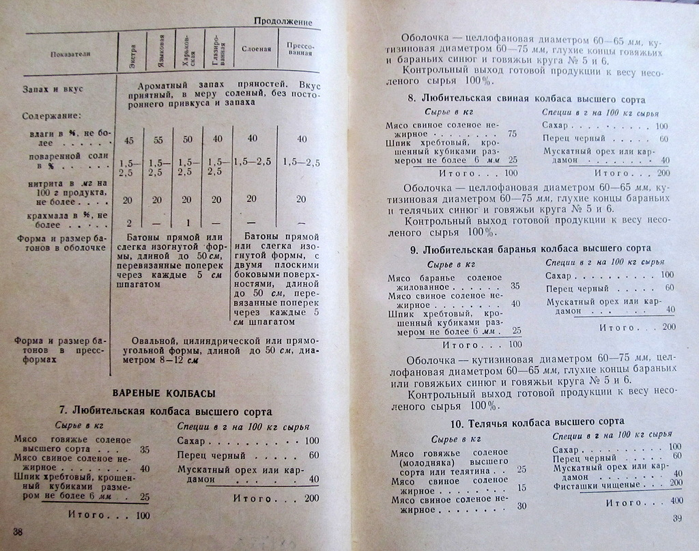

http://ihistorian.livejournal.com/605429.html
ihistorian
Миф о советской колбасе
Прежде чем познакомить своего читателя с основным ассортиментом советских колбасных изделий и копченостей согласно справочнику 1960 года (Конников А.Г. Справочник по производству колбасных изделий и мясных полуфабрикатов. 2-е изд, перераб., дополн. - М.: Пищепромиздат, 1960), я обратился с просьбой вспомнить те сорта советской колбасы, которые читателям приходилось пробовать в позднем СССР.
Я был приятно удивлен обилием сортов, которые читатели вспомнили. К сожалению, молодые читатели, которым все мозги запудрили советским колбасным дефицитом, очень нуждаются в такой информации.
Сегодня я выкладываю перечень всех основных сортов колбасных изделий и мясных деликатесов, которые производились в 1960 г. на мясокомбинатах СССР.


Пищевая промышленность СССР в 1960 г. произвела колбасных изделий 1 миллион 351 тысячу тонн, или по 6,3 кг на душу населения.
Как подсказывает память очевидцев, к 1970 г. положение с колбасой в советской торговле ухудшилось, явно потому, что советская промышленность произвела за 1970 год 2 миллиона 286 тысяч тонн колбасных изделий или по 9,4 кг на душу населения.
miss_marple_lll: Ассортимент колбас в конце 50-х - начале 60-х ,в частности в Ленинграде, действительно был обширным . Однако не все и отнюдь не каждый день покупали колбасу. Говяжьи сардельки по рубль-сорок, возможно и были более-менее повседневным продуктом, но колбасу покупали к праздничному столу, грамм по 100-200. Описываю ситуацию в семье офицера, т.е. семьи с нормальным доходом. В традиции было употребление натуральных продуктов: хозяйки делали котлеты, макароны по-флотски, селёдка с картошкой - дешёвое и популярное блюдо было, и т.д. На праздничном столе - жареная утка(гусь), та же селёдка, салат. И немного сыра и колбаски. К 70-му году уже существенно увеличились зарплаты, повсеместно дома имелись холодильники, колбасу стали покупать(варёную) для повседневного потребления с бутербродами, жарили колбасу на ужин как блюдо быстрого приготовления. Провинциалы закупали целые батоны колбасы и везли домой, т.к. в маленьких городах её не было в продаже.
sharper_ : Мы из барака под новый 1960-й в квартиру
переехали, и, несмотря на то, что сразу купили холодильник, в погребе у нас был
ледник. Дед свинину коптил. Котлеты, гуляши, пироги с мясом, куры, утки. Колбаса
- деликатес праздничный.
Нежданные гости - дед в магазин за колбасой и вином. Соленья из погреба, окорок,
сало.
ninorov: правильно бытописуете. так оно и было. а то складывается впечатление, что народ мёр с голодухи. и прямо второй подвиг народа, похлеще победы в войне - выжили, блинн, и дожили до изобилия путём неимоверных усилий и издевательств над желудком. и кстати, в квартиру переехали не вы одни. началось массовое строительство хрушёвок. не прошло и пятнадцати лет после окончания войны. спутник засандалили и вот-вот первого человека - в космос. конечно все перечисленные достижения в глазах либеральной молодёжи меркнут на фоне отсутствия двухсот сортов колбасы из генномодифицированной сои, которые месяцами валяются в кондиционированных сараях с гордыми вывесками "Мега-супер-пупер-маркет".
sharper_: Если в 60-х, к колбасе относились,как полагается к деликатесу и ели по праздникам или в воскресенье, то уже к началу 70-х, вошли во вкус быстрых завтраков и ужинов через "забежать по дороге в гастроном и чё-нить купить пожрать". В начале 70-х у нас в семье в день её уходило грамм 400. На четверых. А по стране? Всем же хотелось не заморачиваться с завтраками и ужинами. Потому в 1974-м её банально перестало хватать на всех в госторговле задёшево. В месяц семья съедала килограммов 5. Так что 9,4кг в год на рыло это мало
pilgrim_blog: Мозоли у же на языке и пальцах наколотил их спрашивать, как так получается, что, продуктов нет как таковых, а:
- по знакомству всегда все достать можно
- пестрят чужими воспоминаниями, как дядька (тетька, брат, сват, кум, тесть, дед, etc) привозил продукты рюкзаками (мешками, чемоданами, багажниками)
И как такая могучая шизофрения в голове умещается.
Скромничают. Не отвечают. Или изредка ляпают невпопад, уходя от ответа.
radoudale: Колбаса, колбаса... Вот у меня сейчас в холодильнике лежит австралийский стек рибай, 120 дней зернового откорма - вот это вещь. Не подскажете, сколько в СССР стоил стейк? Интересуют рибай, ти-бон и стриплойн.
sergo_r: Пальцы подогни. А то можно подумать, что твой стейк чем-то отличается от вырезки.
radoudale: Ну что вы, стейк - это мраморное мясо бычков определенной породы, с прослойками жира - а вырезка из советской коровы - это сухие волокна, типа перекрученного каната. Помните как у Швейка - "чем больше мы варили эту корову, тем жестче она становилась, а мясо приобрело крепость алмаза, которым можно было резать стекло". Конечно при большевиках были проблемы с мясом, но исключительно потому что коровы в основном доились, чтобы обеспечить все, все население молочным белком, и лишь потом бы стали уже насыщать все, все население мясом, бугага.
cran_berry: Не нужно нести ахинею - стейки бывают очень разные. Это общее название типа разделанного мяса - перпендикулярно мышцам их отрезают. T-bone, ribeye, New York и прочая. Режутся они с разных мест и с разных коров. Обычно - наиболее сочная часть коровы, не более того. Если не знаешь что брать - гавно гавном, жесткое и безвкусное.
В хороших ресторанах продают правильные стейки - оно самое - из мраморного мяса - USgrade или AAA. Стоит оно как самолет, стейк за 50-100 баксов за кусок - норма. Это да - хорошее мясо, в приличном ресторане его еще маринуют правильно и жарят на гриле. Жрал я их в самых дорогих ресторанах, могу засвидетельствовать - правильно приготовленная вырезка нифига не хуже.
Особого упора на элитное мясо в СССР не делали - некому было так извращаться, спрос на мясо по 20 рублей за кусок в СССР врядли бы мог возникнуть... Советская вырезка была отличным мясом, причем органическим по западным стандартам. В СССР была другая номенклатура разделки. Наиболее близкое rib-eye это вырезка. Рубля 3 за кило емнип. НА рынке - 5. И качества она была - особенно на рынках - твой стейк курит в сторонке.
01/11/2012
http://ihistorian.livejournal.com/613308.html
Рецептура и технология производства советской вареной колбасы
Долго ли недолго выложил я читателям перечень 210 сортов советских колбас и копченостей, да только круги по интернету до сих пор ходят: поколение пепси пребывает в шоке, до этого пребывая в убеждении, что колбасу в СССР делали только по праздникам и для номенклатуры.
Кстати, а сколько делали этой колбасы-то в РСФСР?
В 1990 г. - 2 283 тысячи тонн, по 15,4 кг на бедную советскую душу. Это было очень мало, поэтому был страшный дефицит колбасы. Люди могли бросить все дела и на пару дней отправиться в путешествие до Москвы, чтобы привезти оттуда голодающим детям палку «Докторской» и три колечка «Краковской». Советские мужики только тех женщин в жены брали, у которых за плечами было несколько таких колбасных ходок...
Но страшные дефицитные времена минули, Великая Колбасная революция смела ретроградов от власти, разверзлись двери свободы и изобилия. В 2009 г. в РФ, уничтожив поголовье скота и многие тоталитарные мясокомбинаты, силами тысяч небольших колбасных цехов и безо всякой ненужной скотины, использовав только голую предпринимательскую смекалку, произвели аж 2 238 тысяч тонн колбасной продукции или по 15, 7 кг на вольную российскую душу. Сегодня колбаску мы можем лицезреть на каждом затрапезном прилавке, по любой цене от 60 до 1260 рубликов за килограмм, а новое поколение россиян не хочет верить, что за подобной херней кто-то специально мог поехать к черту на кулички. На наших глазах советская колбаса стала легендой.
Я продолжаю знакомить читателя с историей советской колбасы по справочнику 1960 года (Конников А.Г. Справочник по производству колбасных изделий и мясных полуфабрикатов. 2-е изд, перераб., дополн. - М.: Пищепромиздат, 1960). Сегодня мы узнаем состав и технологические требования к производству советских вареных колбас. Добавляли ли в колбасу воду и лед, свиную шкурку, соевые наполнители, дробленые кости, консерванты, туалетную бумагу и кровь репрессированных диссидентов?


